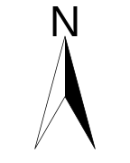
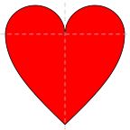
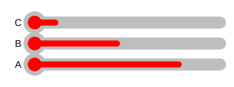

第 3 章 元素
他从信封里拿出一页四折叠的半张 \(13\times17\) 英寸的信纸。他把信纸打开铺在桌上，中间有一行铅字拼贴成的句子：
若你看重自己生命的价值或还有理性，那就远离沼地。
只有“沼地”两个字是用墨水写的。
“现在，”亨利·巴斯克维尔爵士说，“福尔摩斯先生，也许您可以告诉我，这是什么意思，到底是谁对我的事这么感兴趣呢？”
……“可是，亲爱的华生，两者之间的联系非常紧密，短信中的每个单字都是从这个长句中抽出来的。例如：‘你’、‘你的’、‘生’、‘命’、‘理性’、‘价值’、’远离’等，你现在还看不出这些字是从那里面弄来的吗？”
“天啊！太对了！唉呀，您可聪明绝顶！”亨利爵士喊了起来。
— 柯南·道尔《巴斯克维尔的猎犬》
任何一幅统计图形都是由最基础的图形元素构成的，这些元素我们并不陌生，无非就是颜色、点、线（直线、曲线、线段甚至箭头）、矩形、任意多边形、文本以及图例。R 提供了相应的一系列函数，用以向已有的图形中添加图形元素。事实上，R 的所有作图函数分为两类，一类是高层函数（high-level），用以生成新的图形；另一类就是低层函数（low-level），这一类指的正是绘制图形元素的这些基础函数。
本章所介绍的图形元素都是基础图形系统的元素，关于其它系统的元素，参见第 5 章，但归根结底，构建图形的原理是类似的。本章的目的是让读者了解如何从底层一步步构造一幅完整图形。当然，这并非对所有读者都有用，若想直接了解 R 高层作图函数，不妨直接跳入第 4 章。
3.1 颜色
默认情况下，R 中颜色的设置主要需要依靠 grDevices 包的支持，其中提供了大量的颜色选择函数和生成函数，以及几种预先设置好的调色板（Palette），用以表现不同的主题。我们把 grDevices 包中所有关于颜色的函数大致分为三类：固定颜色选择函数、颜色生成和转换函数、特定颜色主题调色板，这些函数将在下面三小节中详细介绍。
3.1.1 固定颜色选择函数
固定颜色选择函数也就是 R 提供的它自带固定种类的颜色，主要是函数 colors() 以及 palette()：
colors(), colours()-
这两个函数完全一样，只是英文的两种不同拼写而已，它们不需要任何参数，会生成 657 种颜色名称，如：
'beige'（米色）、'bisque'（桔黄色）、'chocolate'（巧克力色）、'cyan'（青色）、'gold'（金黄色）、'ivory'（象牙色）、'lavender'（浅紫色）等。下面的代码表示从colors()中随机抽取 20 种颜色（注意，sample()是随机抽样函数，因此重复这个语句每次得到的结果可能会不一样，这是正常的）：
## [1] "sienna3" "burlywood4" "gray61" "grey10"
## [5] "grey52" "skyblue1" "grey76" "seagreen1"
## [9] "slateblue" "grey81" "goldenrod4" "slateblue4"
## [13] "red4" "grey90" "lightsteelblue" "dimgrey"
## [17] "burlywood1" "gray33" "gray12" "cyan4"有兴趣观看所有 657 种颜色的读者可以试着运行下面的语句，其中 pdf() 函数的作用是打开一个作图设备，详情参见附录 B.6 节，可以把参数 'colors-bar.pdf' 替换为任意一个可以读写的路径 1，条形图 barplot() 的说明参见 4.4 小节。最后结果是在设定文件路径上获得一个 PDF 文件，展示所有颜色名称及其对应的颜色。
pdf("colors-bar.pdf", height = 120)
par(mar = c(0, 10, 3, 0) + 0.1, yaxs = "i")
barplot(rep(1, length(colors())),
col = rev(colors()), names.arg = rev(colors()), horiz = TRUE,
las = 1, xaxt = "n", main = expression("Bars of colors in" ~ italic(colors()))
)
dev.off()palette()-
调色板函数；用法
palette(value)，这个函数用来设置调色板或者获得调色板颜色值；注意，实际上这个函数的结果可能并非“固定”颜色，但是只要设定好了调色板，它的取值就不会再改变（直到下一次重新设定调色板）。如果不写任何参数，那么该函数返回当前的调色板设置，即一个包含当前调色板中所有颜色的向量；若参数长度为 1 则将当前调色板重新设置为以该参数为名称的调色板，目前这种参数只有'default'这一种，即设置为默认调色板：palette('default')；若参数为一个颜色向量，那么将当前调色板中的颜色更改为该参数表示的颜色。如下例：
## [1] "black" "#DF536B" "#61D04F" "#2297E6" "#28E2E5" "#CD0BBC" "#F5C710"
## [8] "gray62"## [1] "white" "aliceblue" "antiquewhite" "antiquewhite1"
## [5] "antiquewhite2" "antiquewhite3" "antiquewhite4" "aquamarine"
## [9] "aquamarine" "aquamarine2"调色板的好处在于，我们可以在 R 中使用一个整数来表示颜色，而这个整数对应的颜色就是调色板中相应位置的颜色，比如在某作图函数中调用参数 col = 2 表示取调色板中第 2 种颜色。 若整数值超过了调色板颜色向量的长度，那么 R 会自动取该整数除以调色板颜色向量长度的余数。
3.1.2 颜色生成和转换函数
R 提供了一系列利用颜色生成模型如 RGB 模型（红绿蓝三原色混合）、HSV 色彩模型（色调、饱和度和纯度）、HCL 色彩模型（色调、色度和亮度）和灰色生成模型等。颜色的构造原理比较复杂，超出了本书讨论范围，因此这里仅对相关函数的用法作介绍。
rgb()-
红绿蓝三原色混合，用法
rgb(red, green, blue, alpha, names = NULL, maxColorValue = 1)；其中前四个参数都取值于区间 [0, maxColorValue]，names参数用来指定生成颜色向量的名称。这里前三个参数不用过多解释，值越大就说明那种颜色的成分越高；可能alpha我们不太熟悉，它指的是颜色的透明度，取 0 表示完全透明，取最大值表示完全不透明（默认），透明度在统计图形中有着重要地位，因为它具有一个非常有用的性质 — 透明度可以叠加，即：两个或多个带有透明色的图形元素重叠在一起时，重叠部分的透明度会变小；这在某些统计图形中可以找到很好的应用，例如当散点图中点的数目过多而导致大量的点相互重叠时，我们可以使用透明色来看清图中的深层规律，其中一个直接的规律就是二维密度，点重叠越密集，则颜色越深（由于透明度的的叠加），该处的密度值也越大，图 4.6 给出了一个半透明色应用的示例。 hsv()-
用色调（Hue）、饱和度（Saturation）和纯度（Value）来构造颜色，用法
hsv(h = 1, s = 1, v = 1, alpha)；前三个参数分别对应色调、饱和度和纯度，取值于区间 \([0, 1]\)；alpha意思同上，但取值于区间 \([0, 1]\) hcl()-
用色调（Hue）、色度（Chroma）和亮度（Luminance）构造颜色，用法为
hcl(h = 0, c = 35, l = 85, alpha, fixup = TRUE)；参数 h 取值于区间 \([0, 360]\)，可以将它想象为一个角度：\(0\,^{\circ}\) 表示红色，\(120\,^{\circ}\) 表示绿色，\(240\,^{\circ}\) 表示蓝色，中间的都是过渡色；参数c取值受h和l限制；参数l取值在区间 \([0, 100]\) 上，取值越大生成的颜色越亮；alpha意思同hsv()；fixup表示是否修正生成的颜色值，之所以要修正，是因为有些搭配生成的 RGB 颜色(r, g, b)可能出现某一个元素超过 1 的情形 gray(), grey()-
生成灰色系列；只有一个参数
level，表示灰度水平，取值在 0 到 1 之间，其中 0 表示纯黑色，而 1 表示纯白色；level取一个向量则可以生成一系列灰色值，如下例：
## [1] "#000000" "#404040" "#808080" "#BFBFBF" "#FFFFFF"熟悉十六进制的人应该能看出这些颜色都是由六个十六进制数字组成的，每两位数字（合起来取值从 0 到 255）分别表示红绿蓝（RGB 颜色）的比例。我们知道，当三原色完全混合时，生成的颜色是白色，上面结果的最后一个 '#FFFFFF' 正是纯白色。
除了颜色生成函数之外，grDevices 包还提供了两种颜色转换函数，作用就是把一种颜色从一种颜色系统空间转移到另一种颜色系统空间中表示。这两个函数分别是：
rgb2hsv()-
将 RGB 颜色转换为 HSV 颜色，用法
rgb2hsv(r, g = NULL, b = NULL, maxColorValue = 255)；所有参数意思已经在上面的列表中解释过，只是要注意，当r是一个矩阵时，另外两个参数g和b就应省略不写。下例中我们将一个 \(3\times4\) 的 RGB 颜色矩阵传入函数rgb2hsv()，该函数会把每一列 RGB 颜色都转化为相应的 HSV 颜色。颜色矩阵的前三列分别是红、绿和蓝色，请观察和对比两种颜色系统的表示方法。
## [,1] [,2] [,3] [,4]
## [1,] 255 0 0 10
## [2,] 0 255 0 100
## [3,] 0 0 255 200## [,1] [,2] [,3] [,4]
## h 0 0.3333333 0.6666667 0.5877193
## s 1 1.0000000 1.0000000 0.9500000
## v 1 1.0000000 1.0000000 0.7843137col2rgb()-
将任意一种 R 颜色值转换为 RGB 表示，用法
col2rgb(col, alpha = FALSE)；参数col的取值可以有三种形式，第一种是colors()函数中的任意一种颜色名称（字符串），第二种是如#rrggbb十六进制形式的的 RGB 颜色表示，第三种是一个整数，即调色板中相应位置的颜色。
## [,1]
## red 34
## green 151
## blue 230## [,1]
## red 255
## green 255
## blue 0## [,1]
## red 255
## green 0
## blue 2553.1.3 特定颜色主题调色板
前面介绍的颜色生成过程对于一般人来说也许显得太复杂，除了美术和绘图专业人士，大部分人可能并不懂颜色的透明度、饱和度等概念，那么在配制大批量颜色的时候可能会比较迷惑。此时，R 提供了第三种选择，那就是特定颜色主题的调色板。这些调色板都用一系列渐变的颜色表现了特定的主题，例如彩虹颜色系列、白热化颜色系列、地形颜色系列等等。
rainbow()-
顾名思义，就是用彩虹的颜色（“红橙黄绿青蓝紫”）来产生一系列颜色，用法
rainbow(n, s = 1, v = 1, start = 0, end = max(1, n - 1)/n)；参数n设定产生颜色的数目，参数s、v前文已经解释过；参数start和end设定彩虹颜色的一个子集，生成的颜色将从这个子集中选取，这个子集选取的大致分界线为：红色（red）为 0，黄色（yellow）为 1/6，绿色（green）为 2/6，青色（cyan）为 3/6，蓝色（blue）为 4/6，红紫色（magenta）为 5/6 heat.colors()-
从红色渐变到黄色再变到白色（以体现“高温”、“白热化”，读者可以在 R 中运行
demo(image)并观察第二幅等高线图） terrain.colors()-
从绿色渐变到黄色再到棕色最后到白色（这些颜色适合表示地理地形，读者可以运行
demo(persp)并观察最后两幅关于火山的三维图形，以及运行demo(image)并观察第一幅等高线图） topo.colors()- 从蓝色渐变到青色再到黄色最后到棕色
cm.colors()-
从青色渐变到白色再到粉红色（读者可以运行
demo(image)并观察最后几幅颜色图）
若想要获得更复杂更精细的颜色或调色板，不妨使用 grDevices 包中的颜色“插值”函数，如 colorRamp() 和 colorRampPalette() 函数，读者可以根据需要产生符合特定要求的调色板，以适应展示主题的需要，这里不详述这两个函数的使用方法。
对于缺乏耐心和兴趣去研究颜色的用户来说，附加包 RColorBrewer(Neuwirth 2022) 也不失为一个好的选择。这个包提供了三类调色板，用户只需要指定调色板名称，就可以用包中的 brewer.pal() 函数生成颜色。这三类调色板包括：
- 连续型调色板 Sequential palettes
- 生成一系列连续渐变的颜色，通常用来标记连续型数值的大小
- 极端化调色板 Diverging palettes
- 生成用深色强调两端、浅色标示中部的系列颜色，可用来标记数据中的离群点
- 离散型调色板 Qualitative palettes
- 生成一系列彼此差异比较明显的颜色，通常用来标记分类数据
每一类调色板下有若干种具体的实现，例如 Blues 是连续型调色板下的一种，用以蓝色主题的渐变颜色：
## [1] "#F7FBFF" "#DEEBF7" "#C6DBEF" "#9ECAE1" "#6BAED6" "#4292C6" "#2171B5"
## [8] "#08519C" "#08306B"所有调色板名称及其展示参见图 3.1。这些调色板并非一些简单的颜色组合，而是有一定科学根据的。例如离散型调色板下的颜色对大多数人来说都有较好的区分度，甚至色盲也可以辨认其中不同类的颜色。如果用户对颜色选取拿捏不准，不妨用这个包来生成颜色。实际上这个 R 包是一款叫 ColorBrewer 的产品的重新实现，更多信息可以访问网站 http://colorbrewer2.org/。
layout(matrix(1:3, 3), heights = c(2, 1, 1))
par(mar = c(0, 4, 0, 0))
display.brewer.all(type = "seq") # 连续型：18 种
display.brewer.all(type = "div") # 极端化：9 种
display.brewer.all(type = "qual") # 离散型：8 种图 3.1: RColorBrewer 包中所有调色板颜色的演示：从上至下依次是连续型、极端化和离散型调色板。
3.1.4 渐变色的简单原理及应用
xx <- c(1912, 1912:1971, 1971)
yy <- c(min(nhtemp), nhtemp, min(nhtemp))
plot(xx, yy, type = "n", xlab = "Year", ylab = "Temperatures")
for (i in seq(255, 0, -3)) {
yy <- c(45, nhtemp - (nhtemp - min(nhtemp)) * (1 - i / 255), 45) # rgb() 中的绿色成分逐渐变小
polygon(xx, yy, col = rgb(1, i / 255, 0), border = NA)
# 读者可以在这里加上 Sys.sleep(0.05) 以便看清作图过程
}
box() # 补齐边框图 3.2: New Haven 地区的年均气温（1912~1971 年）：统计图形的应用应该根据数据和事实的环境灵活选取图形的样式。本图的数据为 1912 年至 1971 年 New Haven 地区的年均气温。数据来源：datasets 包中的 nhtemp。
在此我们特别用一节来讲述“渐变色”，原因在于在图形中应用渐变色往往能让图形看起来更美观、避免单调的颜色在图形中显得突兀。不难想象，所谓“渐变”，也就是逐渐变化的意思，这种变化必然对应着某种单调或非单调的（可导）函数，这些函数用来控制颜色值逐步变化。最简单的例子莫过于线性函数：从一种颜色值到另一种颜色值线性变化。比如我们在 rgb() 函数中用一元线性函数控制绿色在 \([0, 1]\) 上的取值，同时将红色和蓝色分别控制为 1 和 0， 那么我们将得到从纯红色到黄色的一个颜色渐变。如：
## [1] "#FF0000" "#FF0900" "#FF1200" "#FF1A00" "#FF2300" "#FF2C00" "#FF3500"
## [8] "#FF3E00" "#FF4600" "#FF4F00" "#FF5800" "#FF6100" "#FF6A00" "#FF7200"
## [15] "#FF7B00" "#FF8400" "#FF8D00" "#FF9500" "#FF9E00" "#FFA700" "#FFB000"
## [22] "#FFB900" "#FFC100" "#FFCA00" "#FFD300" "#FFDC00" "#FFE500" "#FFED00"
## [29] "#FFF600" "#FFFF00"显然本小节的内容与前一小节所讲到的调色板是一致的，只不过调色板是预先配置好了的渐变色系列；我们在这里“重复”讲述渐变色的简单原理，目的是尽量让读者了解各种看起来比较神秘和高深的颜色使用招数的本质。
在本节的最后，我们要再次强调颜色的艺术性：根据不同的环境选用不同的颜色。虽然统计专业人士对绘画、美学可能不必深入了解，但是漂亮、适宜的统计图形总是受人欢迎的。作者曾经在 Ross Ihaka 的个人主页上看到一个很好的例子，内容是展示全球气候变暖的温度随年份变化的折线图，这幅图使用了从黄色到红色的渐变色，而这样的颜色恰好能体现温度的灼热感，对于警示温室效应来说，这种渐变色是极为恰当的（思考一下我们平时作折线图是否会考虑这样的颜色搭配）；Ross Ihaka 并没有给出具体的代码，但通过前面的介绍和后面 3.4 小节的阅读，相信读者一定可以自己动手作出类似的折线图。这里我们也给出一段示例代码，核心部分在于控制多边形的 col 参数；事实上，这幅“折线图”是由多个颜色渐变的多边形重叠而成的，效果见图 3.2（图中数据为真实气温数据）。
3.2 点
关于点的设置，我们既可以在很多作图函数中用 pch 等参数实现，也可以在用低层函数 points() 向已有图形中添加点来实现。后一种方法往往更灵活自由。points() 用法：
## points(x, ...)函数 points() 的参数如 pch 和 col 等在 B.1 小节介绍 par() 函数时中有详细解释，但这两个函数中相同名称的参数最主要的一点区别就是，前者可以使用向量，而后者只能接受一个单值作为参数。此外还有一点细小差异在于参数 bg，它在函数 points() 中表示的是点的背景色而非图形的背景色。为了向图中添加一系列不同样式的点，我们可以使用向量作为 points() 的参数。
图 3.3: 点的类型：pch 参数取值从 1 到 25 及其它符号。注意：21~25 的点可以填充背景颜色。
本节不再赘述参数的意思（读者可以自行查阅帮助），但有三点仍需特别说明一下。首先是 lwd 参数，我们知道这是设定线条宽度的，对于点来说，这个参数同样可以设置点的边缘“线条”宽度；其次，pch 参数同样可以接受字符作为参数值，而不仅仅是数字；最后，参数 pch 取值从 21~25 的点可以填充背景颜色。注意观察，图 3.3 中 21~25 的点边缘线颜色和背景色是不同的，而在 25 之后的点则采用了文本符号作为参数 pch 的值。图 3.3 中也有几对形状一样的点，但是它们实质上是不一样的，例如 0、15 和 22 对应的点都是正方形，但前二者分别是空心正方形和实心正方形，且都不可填充背景，而 22 对应的点是空心正方形，可以填充背景。
一次性作出不同样式的点对于图形阅读和统计分析来说是很有利的，比如有时候我们可以把样本根据某一特征分为几组，对每一组子样本都采用不同的样式作点图，那么我们或许可以从图中点的散布情况发现组间的差异特征。图 3.4 给出了一个鸢尾花散点图的示例（注意向量的使用），很明显，setosa 这一类花的型号较小，因为它们都处于散点图的左下角。
# 先将鸢尾花的类型转化为整数 1、2、3，便于使用向量
idx <- as.integer(iris[["Species"]])
plot(iris[, 3:4],
pch = c(24, 21, 25)[idx],
col = c("black", "red", "blue")[idx], panel.first = grid()
)
legend("topleft",
legend = levels(iris[["Species"]]),
col = c("black", "red", "blue"), pch = c(24, 21, 25), bty = "n"
)图 3.4: 鸢尾花的花瓣长宽散点图：我们可以给每一种鸢尾花标记不同类型的点和颜色，这样可以帮助我们更清楚地区分鸢尾花类型。
图 3.5 为本书的一例“彩蛋”：基于随机性的图形可能会具有某种艺术性。这里仅仅展示了四幅可能的输出，其它更多可能的结果参见：https://yihui.org/cn/2010/08/art-of-points-in-r/，或观看演示 demo('pointArts', package = 'MSG')。若读者感兴趣，甚至可以用 R 为自己生成一幅桌面背景图片，制作方法在前面链接中有介绍。
par(mar = c(0.2, 0.2, 0.2, 0.2), mfrow = c(2, 2))
for (n in c(63, 60, 76, 74)) {
set.seed(711)
plot.new()
box()
size <- c(replicate(n, 1 / rbeta(2, 1.5, 4)))
center <- t(replicate(n, runif(2)))[rep(1:n, each = 2), ]
color <- paste("#", apply(
replicate(2 * n, sample(c(0:9, LETTERS[1:6]), 8, TRUE)), 2, paste,
collapse = ""
), sep = "")
points(center, cex = size, pch = rep(20:21, n), col = color)
}图 3.5: 点的随机艺术作品：随机生成点的大小、颜色和位置，分别用空心点和实心点画图。
3.3 曲线、直线、线段、箭头、X-样条
在 B.1 小节介绍函数 par() 时我们提到了关于线条的一些参数设置，例如 lwd 和 lty 等。类似地，我们可以用函数 lines() 来向图中添加曲线（这里所说的曲线本质上是一些线段的连接，并非光滑的曲线）；下面主要补充说明一下关于线条样式 lty 的设定。
R 中可以实现几乎无数种线条样式，因为它的 lty 参数相当灵活，除了取值 0~6 之外，可以根据一个十六进制的数字串（位数必须是偶数位，且非零）来设定线条的虚实，具体原理是这样：数字串的奇数位上的数字表示画相应长度的实线，然后偶数位上的数字则表示空缺相应的长度，这样就构成了一条虚线。例如，'A5' 表示先画 11 单位长的实线，再接着画 5 单位长的空白，紧接着又画 11 单位长的实线，……，就这样重复下去，完成一条虚线；同理，'711911' 表示：7 单位长实线、1 单位长空白、1 单位长实线、9 单位长空白、1 单位长实线、1 单位长空白。这个十六进制的数字串的最长长度限制为 8 位。
当设定 type = 'h' 时，col 参数可以使用向量，此时各条竖线都将使用不同的颜色；除此情况之外，若其它参数使用了向量，那么只有向量的第一个元素会被使用，其它元素都将被忽略掉。
# 不作图，只画出框架，且指定坐标轴范围
plot(1:10, type = "n", xlim = c(0, 10), ylim = c(0, 10))
lines(1:10, abs(rnorm(10))) # 10 个正态随机数绝对值的波动线
abline(a = 0, b = 1, col = "gray") # 不同的直线
abline(v = 2, h = 2, lty = 2)
text(8, 3, "abline(a = 0, b = 1)") # 添加文本
arrows(8, 3.5, 6, 5.7, angle = 40) # 添加箭头
# 参数用了向量：不同灰度的线段
segments(rep(3, 4), 6:9, rep(5, 4), 6:9, col = gray(seq(0.2, 0.8, length = 4)))
text(4, 9.8, "segments")图 3.6: 曲线、直线、直线段、箭头的展示说明
关于直线，我们在平面坐标系中只需要确定两个因素就可以确定它的位置：即斜率和截距。函数 abline() 就是用来添加直线的，参数同样可以使用向量（这一点在低层函数中几乎普遍适用，所以后面不再重复说明）。函数用法如下：
## abline(a = NULL, b = NULL, h = NULL, v = NULL, reg = NULL, coef = NULL,
## untf = FALSE, ...)其中，a 是截距，b 是斜率，h 是画水平线时的纵轴值，v 是画垂直线时的横轴值，reg 是一个能用函数 coef() 提取系数（包含斜率和截距）的 R 对象，典型的就是用线性模型（回归）生成的对象，系数是一个长度为 2 的向量，分别为截距和斜率；后面的 ... 表示还可以传入其它参数（比如 lty、col 等）。
线段可以用函数 segments() 生成，用法如下：
## segments(x0, y0, x1 = x0, y1 = y0, col = par("fg"), lty = par("lty"),
## lwd = par("lwd"), ...)前四个参数表示线段的起点和终点坐标，后面的参数相信读者也都已经熟悉。箭头可以用函数 arrows() 生成，用法如下：
## arrows(x0, y0, x1 = x0, y1 = y0, length = 0.25, angle = 30, code = 2,
## col = par("fg"), lty = par("lty"), lwd = par("lwd"), ...)类似于线段，前四个参数表示箭头的起点和终点坐标，length 表示箭头尖上短线的长度（单位：英寸），angle 表示箭头尖短线的角度（默认为 \(30\,^{\circ}\)），code 表示箭头的样式（整数 1~3 分别表示尾部箭头、首部箭头和两端都带箭头），注意若 length 设置为 0，那么将不会画出箭头（只有箭头线的主体即一条线段）。关于曲线、直线、线段和箭头函数的示例代码和效果参见图 3.6
图 3.7: X-样条各种形状的展示：观察 shape 参数的取值（图中标注的数字）与样条形状的对应关系。
下面我们再介绍一下一种特殊的曲线 — X-样条（X-spline），样条是用光滑曲线连接若干数据点的曲线，注意它与前面提到的曲线 lines() 的区别在于数据点之间的连接线。样条函数用法如下：
## xspline(x, y = NULL, shape = 0, open = TRUE, repEnds = TRUE, draw = TRUE,
## border = par("fg"), col = NA, ...)前两个参数给定点的位置，shape 为样条的形状，取值在 \([-1, 1]\) 之间，当取值为负数时，曲线穿过给定的点，负值绝对值越小则曲线的角度越尖锐，反之角度越圆滑，shape 取值为正数时，曲线脱离给定的点，正值越小越靠近给定点；open 决定是否样条曲线封闭；repEnds 为逻辑值，当样条曲线不封闭时，该参数决定是否重复使用端点上的点；draw 决定是否画线，若为 FALSE，则仅仅计算曲线的坐标位置而不画线；border 为曲线的颜色；col 为封闭曲线的填充颜色。图 3.7 为各种形状的 X-样条，注意观察 shape 参数与曲线形状的对应关系。
3.4 矩形、多边形
R 中绘制多边形也是很方便的，主要使用 polygon() 函数，矩形是多边形的特例，不过 R 也提供了专门的函数 rect() 来绘制它。多边形的主要特征在于增加了一些填充选项，比如颜色填充，或者用阴影线填充。关于颜色、线条样式的设置就不必再重复说明。矩形和多边形的用法如下：
## rect(xleft, ybottom, xright, ytop, density = NULL, angle = 45, col = NA,
## border = NULL, lty = par("lty"), lwd = par("lwd"), ...)## polygon(x, y = NULL, density = NULL, angle = 45, border = NULL, col = NA,
## lty = par("lty"), ..., fillOddEven = FALSE)矩形函数的前四个参数分别制定左下角和右上角的坐标，用以确定矩形的位置，同样，多边形函数的前两个参数给出一系列坐标点，用以围成一个多边形；density 参数设置阴影线的填充密度（每英寸填充多少条线），如果设置了一个正值，那么颜色填充参数 col 将被用到阴影线上，只有当 density 被设置为负数或 NA 或 NULL 时 col 才可以填充整个区块颜色；angle 参数设置填充线条的角度；col 设置填充颜色；border 设置边框颜色，若设置为 FALSE 或 NA，那么边框线将被省略。
绘制多边形时要清楚它的过程：线条会随着横纵坐标逐点延伸，也就是画普通折线的过程，当走到最后一点时，就会重新延伸回第一点，这就是多边形的绘制基本原理。一般来说，大部分作图函数对于缺失数据都会默认省略不画，不会对图形造成什么影响，而对于多边形函数，数据中的缺失将构成“分界点”，用以分隔缺失点两端的点群，因此，若数据含缺失值，那么会有多个多边形被作出来。这一点性质对与多边形的灵活运用也是很重要的，我们有时可以故意设置缺失值，用以将图形分割为不同的区域；下文我们将马上看到一个例子。
x <- rnorm(40) # 产生 40 个正态随机数
plot(x, xlab = "", type = "l") # 画线图
# 请思考为什么坐标值要这样设置：多边形的连线路径
polygon(c(1, 1:40, 40), c(0, x, 0), col = "gray")
xy <- par("usr") # 获取当前图形区域坐标范围，以便下用
# 用白色矩形挡住了 0 以下的部分
rect(xy[1], xy[3], xy[2], 0, col = "white")
lines(x) # 重画一遍 x 的线条
abline(h = 0, col = "lightgray") # 添加水平线
图 3.8: 多边形和矩形结合使用的一个巧妙图示：将 0 上下的数值分别用不同颜色填充。本图也可以利用 clip() 函数更方便地完成，请读者自行查阅帮助。
最后要说明，其实还有一个特殊的“矩形”，那就是整幅图形的边框，它可以用 box() 函数来完成。我们可以不使用任何参数以添加默认的边框，也可以调整一些参数画出不同样式的方框（如虚线框等），具体参见 ?box。
关于多边形和矩形，我们用一个比较巧妙的例子来说明具体用法，代码和效果参见图 3.8。这幅图的目的在于只填充 y 值在 0 以上的部分，0 以下的部分留空。采取的手段是：先用多边形整体填充颜色，然后根据当前图形的坐标范围（用 par('usr') 获得（或者等价使用 par()$usr），参见 B.1 小节）画一个白色的矩形覆盖 0 以下的图形部分，此时下面部分的线条也被覆盖了，因此接着我们必须再次画线，将所有线条补充完整，最后，添加一条高度为 0 的水平线，即完成本图。
图 3.9: 用多边形生成的“万花筒”：若干彩色三角形（或者称之为“千纸鹤图”？）
图 3.9 是利用含有缺失值的数据画出来的多边形，它看起来与万花筒图案有些相似（本例为“彩蛋”）。这幅图的生成过程是：随机生成 3 个标准正态分布随机数，然后插入一个缺失值 NA，下一次再以上一批随机数的最后一个为均值生成 3 个随机数，依此类推生成若干组“三个随机数加上一个 NA”这样的数据，这样最后画多边形的时候，得到的就是若干个独立的三角形。我们将这一组三角形分别向右、向上和向下平移，得到四组三角形，也就是不太精确地模仿了万花筒的原理。该演示收录在 MSG 包中，读者可用 demo('kaleidoscope', package = 'MSG') 查看源代码。
3.5 网格线
有时为了方便图形阅读者知道图中元素的更精确的位置，我们可以用添加背景网格线的办法来辅助读者的视线对齐坐标轴。函数 grid() 所实现的就是这一个功能，它的用法较简单：
## grid(nx = NULL, ny = nx, col = "lightgray", lty = "dotted", lwd = par("lwd"),
## equilogs = TRUE)可以看到，这个函数已经使用了一些默认的参数设置，例如将网格线的颜色设置为浅灰色，线条样式设置为点线，这是一种比较美观的设置，让网格线既不显得太突兀，又能达到辅助的效果；一般情况下，我们可以直接使用不带参数的 grid() 函数添加网格。参数 nx 和 ny 分别表示横纵轴上网格线的条数，颜色、线条样式和线条宽度参数不必再说明，最后 equilogs 参数意思是，当坐标取了对数之后，是依然使用等距的网格线（TRUE）还是根据对数函数使用不等距的网格线（FALSE）。
细心的读者也许能发现，其实前面讲到的内容中已经有两处可以实现“网格线”的功能，第一处是 par() 函数中的 tcl（或 tck），将坐标轴的刻度线长度设置为图形的宽高就可以构成一种粗略的网格；第二处是 abline() 函数，使用参数 h 和 v 即可实现更细致的网格线。
3.6 标题、任意文本、周边文本
本节中的文本以及下一节中的图例都是用来辅助解释图形的信息，图形中的所有文本可以分为三类：标题（主副标题和坐标轴标题）、任意文本和图形周边文本。title() 函数用来添加标题，text() 函数用来向图形中任意位置添加文本，mtext() 函数用来向图的四条边上添加文本。用法如下：
## title(main = NULL, sub = NULL, xlab = NULL, ylab = NULL, line = NA,
## outer = FALSE, ...)## text(x, ...)## mtext(text, side = 3, line = 0, outer = FALSE, at = NA, adj = NA, padj = NA,
## cex = NA, col = NA, font = NA, ...)若无特别设定，这些文本的样式都将根据当前的函数 par() 结果来设置，比如颜色、字体等。函数 title() 的前四个参数就是主、副、x 轴、y 轴标题的字符串，line 设置一个距离图形边缘的行数（即：文本与图形边缘的距离为 line\(\times\) 行高）；outer 表示是否将文本放在外边界中（参见 B.1 小节的说明）；函数 text() 的参数 labels 就是欲添加的文本（对应横纵坐标的设置，可以是字符串向量），若不指定本参数，那么默认将以数字 1:length(x) 作为文本标记添加到图中；adj 与 par() 中说明相同；pos 参数取值整数 1~4 分别表示文本的位置在坐标点的下、左、上、右方，注意，它会覆盖参数 adj 的设置；offset 参数会根据 pos 参数的取值将文本向相应的方向移动一定比例的距离；vfont 参数用 Hershey 矢量字体来设置文本的字体式样，取值长度为 2 的向量，第一个元素指定字体（Typeface），第二个元素指定式样（Style），关于字体和式样的搭配种类，请查看帮助 ?Hershey，使用 Hershey 矢量字体的优势在于：
- Hershey 字体会产生更好的输出，特别在计算机屏幕上，或者用于旋转以及小字体时
- Hershey 字体提供一些标准字体库没有的字体。如提供星座记号，地图符号和天文学符号
- Hershey 字体提供西里尔字符（cyrillic）和日语字符（假名和日本汉字）
此外，等高线图中通常使用 Hershey 矢量字体以使等高线上的文本更清晰好看，由于字体设置搭配内容体系比较庞大，因此感兴趣的读者请仔细阅读帮助（该字体的一个缺陷是不能用在数学公式中）；side 参数取值为整数 1~4 分别把周边文本作在表示图形的下、左、上、右边；其它参数基本已经都已经接触过，有些不常用的参数在此处省略不讲。
3.7 图例
par(mar = c(4, 4, 4, 3))
plot(0:10, type = "n", xlab = "", ylab = "", xlim = c(0, 12))
grid(col = "gray")
title(
main = "Demonstration of text in R Graphics",
xlab = "X-axis title", ylab = "Y-axis title"
)
mtext("Here is \"side = 4\"", side = 4, line = 1)
x <- c(6, 4, 6, 8)
y <- c(8, 5, 2, 5)
s <- c(0, 90, 180, 270)
for (i in 1:4) {
text(x[i], y[i], sprintf("srt = %d", s[i]), srt = s[i])
}
segments(c(6, 0, 6, 12), c(10, 5, 0, 5), c(0, 6, 12, 6),
c(5, 0, 5, 10),
lty = c(2, 1, 1, 2)
)
legend(-0.2, 9.8, c("Upper", "Lower"),
lty = 2:1, cex = 0.8,
bty = "n"
)图 3.10: 添加标题、任意文本和周边文本的一个演示
函数 legend() 的作用是添加图例，总所周知，图例也是很重要的辅助信息，告诉图形使用者图中各组不同样式的元素分别代表何种对象。它的参数比较多，但实际应用中通常仅仅用到其中少数几个：
## legend(x, y = NULL, legend, fill = NULL, col = par("col"), border = "black",
## lty, lwd, pch, angle = 45, density = NULL, bty = "o", bg = par("bg"),
## box.lwd = par("lwd"), box.lty = par("lty"), box.col = par("fg"), pt.bg = NA,
## cex = 1, pt.cex = cex, pt.lwd = lwd, xjust = 0, yjust = 1, x.intersp = 1,
## y.intersp = 1, adj = c(0, 0.5), text.width = NULL, text.col = par("col"),
## text.font = NULL, merge = do.lines && has.pch, trace = FALSE, plot = TRUE,
## ncol = 1, horiz = FALSE, title = NULL, inset = 0, xpd,
## title.col = text.col[1], title.adj = 0.5, title.cex = cex[1],
## title.font = text.font[1], seg.len = 2)前两个参数 x 和 y 表示图例的坐标位置（左上角顶点的坐标）；legend 参数通常为一个字符向量，表示图例中的文字；fill 参数指定一个与图例字符向量对应的颜色向量用以在文本左边绘制一个颜色填充方块；col 参数设置图例中点和线的颜色；lty、lwd 和 pch 参数指定图例中点线的样式；angle 和 density 参数效果类似于 fill 参数，只是换成指定角度和密度的阴影线填充方块；bty 参数设置图例框的样式，很类似 par() 中的同名参数；title 参数设定图例的标题；剩余参数用来设置更细微的地方，不太常用。
从以上几节对图形元素的介绍可以看出，R 可以设置极其细微的元素特征，当然，读者不必过于细究所有的参数，对于大多数函数来说，都只有两三个核心参数，比如，坐标位置向量是几乎所有函数的共同核心参数，而 legend() 函数的主要参数除此之外还有字符向量 legend。对于其它参数，请在使用时即时查阅即可。
关于网格线、文本和图例，图 3.10 给出了它们的示例。
3.8 坐标轴
坐标轴是图中元素所代表数值大小的参照物，因此它在图形中的作用也很重要，特别是有时候我们需要对坐标轴做一定的特殊设置，比如作一幅双坐标轴的图形，或者在坐标轴标记中使用特殊的文本，那么就必须使用 axis() 函数来辅助完成对坐标轴的设置和调整。该函数的用法如下：
## axis(side, at = NULL, labels = TRUE, tick = TRUE, line = NA, pos = NA,
## outer = FALSE, font = NA, lty = "solid", lwd = 1, lwd.ticks = lwd,
## col = NULL, col.ticks = NULL, hadj = NA, padj = NA, gap.axis = NA, ...)data(Export.USCN, package = "MSG")
par(mar = c(4, 4.5, .1, 4.5))
# 看似条形图，实为粗线条，宽度 lwd = 10
plot(1:13, Export.USCN$Export,
xlab = "Year / Country",
ylab = "US Dollars ($10^{16}$)", xaxt = "n", type = "h",
lwd = 10, col = c(rep(2, 6), NA, rep(4, 6)), lend = 1,
panel.first = grid()
)
# 设置 x 轴的刻度标记：\n 的意思是换行符
xlabel <- paste(Export.USCN$Year, "\n", Export.USCN$Country)
xlabel[7] <- ""
abline(v = 7, lty = 2) # 添加一条分隔线
# 使用带有换行符的刻度标记
axis(1, 1:13, labels = xlabel, tick = FALSE, cex.axis = 0.75)
# 换算为人民币再计算另一个坐标轴刻度（汇率 8.27）
ylabel <- pretty(Export.USCN$Export * 8.27)
axis(4, at = ylabel / 8.27, labels = ylabel)
mtext("Chinese RMB ($10^{16}$)", side = 4, line = 2)
box()图 3.11: 双坐标轴图示：中美两国 1999~2004 年出口额，分别以美元和人民币表示。注意图中 x 轴标签文本是如何换行的。
其中，side 参数与 mtext() 函数中的参数意思相类似，表示将坐标轴画在哪条边上，事实上通过前面一些图形元素参数的讲解，读者应该能意识到，R 中上下左右方向的顺序一般都是“下、左、上、右”，分别用 1、2、3、4 表示；at 参数表示在什么位置画坐标轴标记线；labels 参数指定坐标轴刻度标记的字符。
Murrell (2018) 中第 3.4.5 小节举了一个双坐标轴图形的例子，图中用左右两边的纵轴分别表示摄氏和华氏的温度，即：对于图中同一点，既可以对照左边看摄氏度，也可以对照右边看华氏度；这就是双坐标轴的用途。此处我们不妨也举一个类似的例子来说明 axis() 函数的功能。图 3.11 展示的是从 1999~2004 年中美两国的出口贸易总额，其中 axis() 函数主要作用在于两个地方：第一点是横轴的刻度标记，注意这些刻度标记与我们平时看到的标记有所不同，主要是这一系列标记都是两行文本，原因就在于 labels 参数中使用了换行符，对 C 语言比较熟悉的读者对此不会感到陌生，这里第一行是年份，第二行说明了国家：CN 表示中国，US 表示美国；第二点是图的右边多了一根坐标轴，左边的纵轴表示出口额按美元计价（单位：\(10^{16}\) 美元，出口额数值太大，因此采用较大的单位），右边表示同样的出口额用人民币计价（例如右边轴上 400 人民币对应左边 \(400/8.27\approx48.4\) 美元），同一个数值在图中既可以从左边观察美元金额，又可以从右边观察人民币金额。本例中使用的数据来源为：汇率数据来自联合国统计署网站 https://unstats.un.org，从 1999~2004 年人民币和美元的平均汇率稳定在 8.27，出口额年度数据来自 WTO 网站：https://data.wto.org。整理后的数据如下，程序代码可以参见图 3.11。
## Export Year Country
## 1 19.4931 1999 CN
## 2 24.9203 2000 CN
## 3 26.6098 2001 CN
## 4 32.5596 2002 CN
## 5 43.8228 2003 CN
## 6 59.3326 2004 CN
## 7 NA NA <NA>
## 8 69.5797 1999 US
## 9 78.1918 2000 US
## 10 72.9100 2001 US
## 11 69.3103 2002 US
## 12 72.4771 2003 US
## 13 81.8520 2004 US3.9 图形元素应用示例
在介绍了图形的基本构成元素的作法之后，我们应该可以理解 R 作图的自由——几乎所有图形的细节都可以被我们控制。下面我们举几个例子来说明如何利用图形元素来构造完整的图形。
3.9.1 瀑布图
瀑布图（Waterfall Chart）的最初发明者我们无法考证，但可以在麦肯锡的报告中看到它的身影。如果在 Google 中搜索 Excel 瀑布图，我们可以看见一些令人无奈的结果，例如
步步致赢瀑布图(步行图)制作系统 1.1 […] 下载 […] 共享版最多支持 6 个数，正式版无限制。
或是
瀑布图的完美解决方案 [Excel 图表] […] 简单说明一下：[…] （分为 6 步）
作者曾在某咨询公司听过一场关于 Excel 作图的培训，其中也大谈瀑布图的技巧，大致思路是用一些本来不直观的方法来完成瀑布图的制作，例如用白色填充矩形条，使之“隐藏”起来，而上面的矩形条才能得到“悬空”的效果。
瀑布图究竟是什么呢？只不过是一系列矩形而已（3.4 小节）。它的外观类似于条形图，区别在于除了第一个矩形条之外，后面的矩形条都不再以零点为基准线来画，而是以前一个矩形条的高度为起点画矩形到该矩形条位置上的取值，这样可以反映一个变量取值的上下变化情况（主要是体现相邻矩形条的差值）。下面我们结合一个数据实例来说明瀑布图的简单思想和简单做法。
我们选取了 2010 年 8 月第一周“统计之都”网站的“绝对唯一访问次数”（Absolute Unique Visitors）来画瀑布图，数据如下
## [1] 66 -32 -63 -35 -217 30瀑布图中第一个矩形条高度为 939，第二个矩形则从 939 继续向上画 \(1005-939=66\) 单位，第三个矩形则从 1005 开始向下画 32 单位，依此类推。对于访问量下滑的那些日期，可以用特殊颜色标示（比如红色警告），以区分访问量增长的日期。图 3.12 给出了 R 代码和瀑布图结果，其中核心代码只有最后一句，前面的代码仅以布局和美观为目的。从代码可以看到，我们用低层作图函数 rect() 来画瀑布图是非常直观的：前四个参数给定了矩形的位置坐标，而这些位置经过简单的逻辑思考很容易得到。所有任务只是画矩形而已，在缺少对图形元素充分支持的软件包中，我们付出了不必要的代价。
par(mar = c(4, 4, .5, .1))
plot(auv,
xlab = "八月第一周",
ylab = "绝对唯一访问次数", type = "n",
xlim = c(0.5, 7.5),
ylim = c(0, max(auv)),
xaxt = "n", panel.first = grid()
)
axis(1, 1:7, sprintf("周%s", c(
"一", "二", "三", "四", "五", "六", "日"
)))
rect(1:7 - 0.3, c(0, auv[1:6]), 1:7 + 0.3, auv,
col = c(NA, ifelse(diff(auv) < 0, "red", NA))
)图 3.12: “统计之都”网站八月第一周访问数据瀑布图：周一访问量为 939， 周二上升，周三开始下降（红色矩形表示访问量下降），直到周末降到最低。这个规律在其它星期都存在，也许它反映了大众普遍的劳累和忙碌规律？
3.9.2 梯度下降算法
箭头在图形中的作用通常是指示，例如图 3.6 中的箭头用来将文本标注指向一条直线，这样使得文本的位置可以灵活安排。下面我们再给一个看起来更复杂的例子，来说明箭头的一个自然而然应用。很多统计计算过程都涉及到迭代，因为这些计算问题没有显式解（即：没有明确的数学表达式），很难一步得到答案，但可以通过迭代来一步步逼近真实解，梯度下降算法就是诸多具有迭代特征方法中的一种。梯度下降算法的目标在于寻找一个函数 \(F(\mathsf{x})\) 的极值，不失一般性，我们假设寻找的是极小值。这里我们简单描述一些梯度下降算法的原理：
假设函数 \(F(\mathsf{x})\) 在点 \(\mathsf{a}\) 的一个小邻域内可导（这里 \(\mathsf{x}\) 可以是多维向量），那么从点 \(\mathsf{a}\) 出发，\(F(\mathsf{x})\) 沿负梯度方向 \(-\nabla F(\mathsf{a})\) 函数值下降最快。可以证明对足够小的 \(\gamma>0\)，若
\[\mathsf{b} = \mathsf{a}-\gamma\nabla F(\mathsf{a})\] 那么 \(F(\mathsf{a})\geq F(\mathsf{b})\)。这样，我们随机猜测一个迭代的起点 \(\mathsf{x}_{0}\)，然后按以下方式迭代计算下一步的解 \(\mathsf{x}_{n}\)：
\[\mathsf{x}_{n+1} = \mathsf{x}_{n}-\gamma\nabla F(\mathsf{x}_{n}),\ n\ge0\]
即可满足：
\[F(\mathsf{x}_{0})\ge F(\mathsf{x}_{1})\ge F(\mathsf{x}_{2})\ge\cdots\]
这样序列 \(\left\{ \mathsf{x}_{n}\right\}\) 将收敛到局部最小值。
上述算法中，核心计算就是目标函数 F 的导数（多维情况下通常称为梯度），剩下的就是简单的四则运算。求导可以用 R 自身的函数 deriv()，所以这个计算实现起来并不困难，而我们想要通过一个例子来说明几个在统计计算中容易被广大统计应用者忽略的问题：
- 迭代的起点
- 步长（本算法中可以看作是 \(\gamma\)）
- 迭代次数
- 误差
我们在实际应用中，往往过于依赖和相信计算机程序，认为所有默认设置都是最优或最可靠的，实际并非如此，否则所有的函数都没有必要设置参数了。以上四个问题是大多数迭代性质的算法都会涉及到的：迭代起点通常需要和真实的解相隔较近，但这个要求不具备可操作性，因为我们并不知道真实解在哪里；步长通常尽量小，保证迭代能稳定收敛，否则迭代过程中跳跃很大不容易找到解，但小步长的缺点也很明显，它使得迭代进行得很慢；迭代次数通常需要尽量大；误差显然应该越小越好，例如在求根的问题中，我们希望目标函数值越接近于 0 越好。图 3.13 选取了一个二元函数
\[f(x,y)=\sin(x^{2}/2-y^{2}/4+3)\cos(2x+1-\exp(y)),\]
目标是在 \(\left\{ (x,y)|x\in[-1,1],\ y\in[0.5,2.2]\right\}\) 范围内求得一对 \((x,y)\) 使得 \(f(\cdot,\cdot)\) 最小，整幅图的背景是一幅颜色图（4.14 小节将会介绍），图中横轴表示 x，纵轴表示 y，每一对 \((x,y)\) 对应的地方有一个颜色方块，它的颜色深浅代表了函数 \(f(x,y)\) 的取值大小，越深表示值越小。理想情况是，我们随意选取一个迭代起点，梯度下降算法能把我们带到图中的最深处去，这个过程在图中用一系列首尾相接的箭头表示，但图 3.13 显示的情况并不完全与我们的预期相符：有些起始点能把我们带到低处，有些则不能；有些步长下收敛较稳定，有些步长则让迭代路径蜿蜒崎岖；有的箭头还没到最低点就停滞不前了，有些则一直能往最低的地方走。本例的目标函数也可以用 R 自身的 optim() 函数来求极小值，它的收敛代码为 0，表示这个计算结果在一定条件下可以收敛（但不代表找到了全局最小值，甚至不代表找到了局部最小值）：
f2 <- function(x) sin(1 / 2 * x[1]^2 - 1 / 4 * x[2]^2 + 3) *
cos(2 * x[1] + 1 - exp(x[2]))
# par 为局部解；value 为目标函数值； convergence 为收敛指示代码
optim(c(-.9, .9), f2, method = "L-BFGS-B", lower = c(-1, .5), upper = c(1, 2.2))## $par
## [1] 0.3227365 1.6024052
##
## $value
## [1] -0.6574
##
## $counts
## function gradient
## 13 13
##
## $convergence
## [1] 0
##
## $message
## [1] "CONVERGENCE: REL_REDUCTION_OF_F <= FACTR*EPSMCH"为了叙述方便，我们将图中最高的点编号为 1，其它点按逆时针方向依次编号。点 1 初始位置在“山脊”上，最初几步迭代可能使它到达了一个“陡峭”的区域（即导数值很大），所以在某一步迭代中一下跳到图的下方，然后不知所终；点 3 的步长大，也有跳跃性，但迂回几次之后最终还是步入了“正轨”；点 6 表现很好，但由于迭代次数很少，因此停在了在离最低点很远的地方；左下角的点 7 到点 15 都表现较好，只是有些点的迭代次数不够，停在了半路；右下角那个点迭代了几步就超出了搜索范围，可能前往另一个局部最小值去了；最后两个点由于已经足够靠近最低点，所以步长显得太大，迭代过程左右大幅摇晃，但前进方向是对的。图中每一个箭头所指的方向都是当前位置上的负梯度方向，理论上它与等高线是垂直的（本图没有加等高线，读者凭眼睛从颜色区域中简单勾勒），显然，负梯度方向大致说来都是使得函数值下降最快的方向，因为大多数箭头都是尽快往颜色最深的地方走，这使得“梯度”的含义非常直观；另外，20 个点的表现告诉我们，有些数值计算方法在特定条件下可能并不会收敛到极大值或极小值。作者对流行的结构方程模型一直持保守态度，原因就是很少有人关心计算层面的东西，把一切都交给计算机去做，殊不知结构方程模型的目标函数是何等的复杂：一个普通的模型可能就包含三十个参数，这些参数是矩阵的构成元素，而目标函数又是由矩阵的逆、行列式等运算构成。也许作者在这个问题上多虑了，但作者所看到的模型应用者几乎无人关心迭代起始点和迭代次数，甚至有人为了防止“坏情况”发生，故意将迭代初始值或者随机数种子固定住，这样的运算毫无疑问是稳定的，但它是否可靠，还值得验证。
图 3.13 同时展示了梯度下降算法的原理以及在应用中可能出现的问题（演示 demo('gradArrows2', package = 'MSG') 可以获得更好的图形质量以及箭头动画效果），它充分显示了 R 语言的统计图形能力可以紧密结合它的统计计算优势，创造出有意义的统计图形。我们使用的只是简单的图形元素（箭头）和基本的计算（求导），但结果的深刻远大于过程的简单。从某种程度上来说，在 R 语言中作图缺的不是工具（工具俯拾皆是），而是创意、思考以及对数据的理解。
图 3.13: 梯度下降算法的过程演示：对于同一个函数，我们选取 20 个迭代起点（外围大实心点），分别用不同的步长和迭代次数来进行迭代（里围相应颜色的小实心点为迭代终止位置）。从每一个起始点开始的迭代过程都由一系列箭头表示，最终这些箭头都大致指向同一个区域。本图是 2008 年作者为中国人民大学统计学院学生刊物《统计功课》设计的封面图形，底部一行附注“一沙一世界，一花一天堂”，取自英国诗人布莱克的诗《天真的预言》，意即仔细观察统计计算过程，会看到一个我们没注意过的微观世界。
图 3.14: 在统计学的轨道中（彩蛋）：本图综合运用了折线、多边形、箭头、文本和圆圈等元素，它原本是作者于 2007 年为中国人民大学统计学院 06 级硕士班设计的一件班徽作品，但后来很多同学认为该图应重命名为“美人鱼图”。作者初衷是将“STAT”四个字母抽象表达为一些图形元素，例如图中一系列圆圈代表“S”，两端的箭头代表“T”，中间的正态分布曲线以及阴影部分代表“A”。
3.10 小结
本章对图形元素的介绍就到此为止，后面章节的统计图形构造仍然会用到这些基础元素。具备这些低层函数的知识之后，只要我们不嫌麻烦，其实所有的统计图形都可以用它们的组合使用加上一定的统计计算而一步步构建出来。当然，一般也不会有人真用这样的方法去作图（练习除外）。我们指出这一点，也是为了说明，统计图形并没有任何神秘可言，随着对图形元素的绘制以及统计量的逐渐深入了解，当一幅统计图形摆在我们面前，我们也应该能如“庖丁解牛”一般洞穿其架构。例如，从纯粹作图的意义上来讲，直方图、条形图、棘状图和马赛克图不过是矩形，条件密度图和饼图是多边形，散点图和带状图是点，折线图和向日葵散点图是线段，等等。事实上，用 R 语言的作图功能作音乐五线谱、画地图、做动画等等，都不足为奇。本书 5.6 小节中所谈到的统计学动画则是图形元素的另类应用，动画包 animation (Xie 2013) 几乎完全是依靠统计计算与 R 基础图形系统而写成，例如前面提到的梯度下降算法的动画演示可以参考 animation 包中的 grad.desc() 函数。
前两章中，我们对 R 的作图基础元素和大部分参数都作了比较详细的介绍，大致掌握这些知识之后，下一章我们就可以正式进入本书的核心部分 — 统计图形，在那些图形中，我们还会多次遇到这些基础知识的应用，到时读者可以再回顾复习。图 3.14 是本章最后一例“彩蛋”，供读者体会折线、多边形、箭头和文本等图形元素的用法。
3.11 思考与练习
彩色图形虽然在外观上很吸引人，但是它的一个局限是可能受客观条件限制而不能被打印出来（例如黑白打印机），我们在选取颜色的时候该如何平衡外观和打印效果？另外，男性和女性的色盲 / 色弱比例各是多少？（可以查阅维基百科：https://en.wikipedia.org/wiki/Color_blindness）
图 3.4 在点的样式选取上是否有明显的缺陷？或者说散点图中的点应该如何选取形状以使得各组点之间的外观差异尽量大？第 7.1.2 小节会对这个问题有详细评论。
当箭头角度参数
angle为 \(90\,^{\circ}\)、code参数为 3 时，箭头的形状是怎样的？这种形状是否和数学上的“区间”有类似之处？请考虑如何利用这种“双箭头”表达统计学中的置信区间。利用三角形的边长关系画一个指北箭头如下

一些数学上函数可以产生有趣的“心形曲线”，例如在极坐标系下 \(r(\theta)=1-\sin(\theta)\) 生成的就是心形的曲线，笛卡尔坐标下方程 \((x^{2}+y^{2}-1)^{3}-x^{2}y^{3}=0\) 对应的解也可以形成心形曲线。这里我们考虑一种简单的心形曲线如下图所示：

这是个左右对称的形状，因此只需要知道左右任一侧的画法就知道整体画法了。实际上，右侧由上下两部分构成，上面是直径为 1 的半圆，下面是翻转了 \(90\,^{\circ}\) 的曲线 \(y=\sin(x)，x\in[0,\pi/2]\)。请思考如何用多边形构造这个形状。MSG 包中的函数
heart_curve()可供参考。温度计形状用来表达比例数据通常很形象，我们可以设定温度计的范围在 \([0,\,1]\) 之间，用汞柱的高度来表达比例。用 R 构造一支“温度计”很简单，如下图：这些温度计实际上由一个灰圆点、一个红圆点、一条灰线段和一条红线段叠加构成，红线段的长度表示比例大小，其它图形元素都只是背景。请尝试用四个图形元素构造温度计，注意这些图形元素的叠加顺序（例如红线必须在灰线之后画，否则会被覆盖）。4.26 小节的符号图中，“符号”的选项之一就是用温度计，但不如这里的温度计形象。对于追求细节完美的用户来说，这里线段末端的样式也值得注意，因为我们实际生活中看到的汞柱末端是弧形的，所以这里要是画成矩形就不合适了；线段末端的三种样式在 B.1 小节中有介绍。

参考文献
Windows 用户注意路径的写法，不能用通常的单反斜杠 \，而应该把路径中的单反斜杠换成双反斜杠 \\ 或者用单斜杠 /；如
D:/colors.pdf或D:\\colors.pdf↩︎